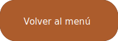

¿Quién era Leonardo Da Vinci?
Nacimiento y primeros años
Hijo ilegítimo y primogénito del notario Piero Fruosino di Antonio da Vinci, y de Caterina Buti del Vacca, una campesina. Su bautismo tuvo lugar en la cercana iglesia parroquial de Santa Croce, pero tanto el padre como la madre no asistieron al no estar casados. Leonardo da Vinci no tuvo apellido en el sentido actual, y "da Vinci" simplemente significa "de Vinci": su nombre de nacimiento completo fue "Lionardo di ser Piero da Vinci". La inclusión del título de "ser" indica que su progenitor era un caballero. Su madre encontró un marido que aceptó su situación "comprometida". Pasó sus primeros cinco años en la aldea de Anchiano en casa de su progenitora, y desde 1457, en casa de su padre y abuelos. En 1452, su padre Piero se había casado con Albiera Giovanni Amadori, de la que no tuvo hijos. Leonardo tuvo así doce hermanastros, todos mucho más jóvenes que él (la última nació cuando Leonardo tenía cuarenta años), y con los que no tuvo mucha relación, pero sí gran cantidad de problemas por la herencia de su padre.
Juventud y primer contacto con el arte
En 1460 Leonardo da Vinci se trasladó a Florencia, donde se formó. Su madrastra murió en 1464, cuando la familia ya vivía en Florencia, y fue enterrada en San Biagio. Ser Piero se casó tres veces más: en 1464, con Francesca di Ser Giuliano Lanfredini, que también murió sin descendencia; con Margherita di Francesco di Jacopo di Guglielmo, en 1475, que finalmente le dio seis hijos; otros seis tuvo con su cuarto y último matrimonio. Leonardo tuvo así doce hermanastros, todos mucho más jóvenes que él (la última nació cuando Leonardo tenía cuarenta años), y con los que no tuvo mucha relación, pero sí gran cantidad de problemas por la herencia de su padre. En torno a 1466 asistió al taller de Andrea del Verrocchio, donde se inició en diversas actividades, desde la pintura de retablos y tablas, hasta la elaboración de grandes proyectos escultóricos en mármol y bronce. En 1472 fue admitido en el gremio de pintores de Florencia, y en 1476 todavía se le menciona como ayudante de Verrocchio, en cuya obra El bautismo de Cristo (c. 1470, Uffizi, Florencia), pintó el ángel arrodillado de la izquierda y el paisaje de matices neblinosos. Su primer encargo fue un retablo para la capilla del Palazzo Vecchio, del ayuntamiento florentino, aunque no llegó a ejecutarse.
Obras más conocidas
Las obras más conocidas de Leonardo son La Gioconda, más conocida como la Mona Lisa, que se encuentra expuesta en el Louvre, La adoración de los Magos, una gran obra inacabada, La Virgen de las rocas, La última cena y el Hombre de Vitruvio. Puedes entrar en detalle de cada una de estas obras en la sección de "Conoce su obra" del menú principal.
